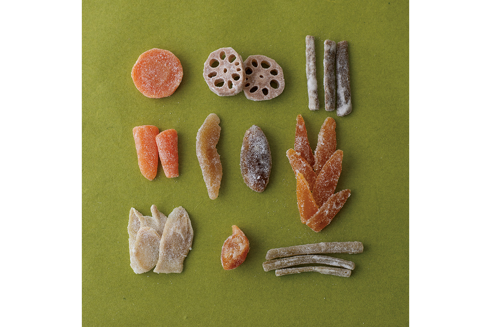
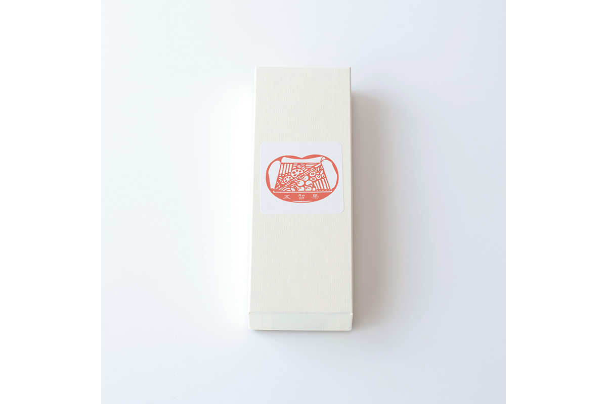
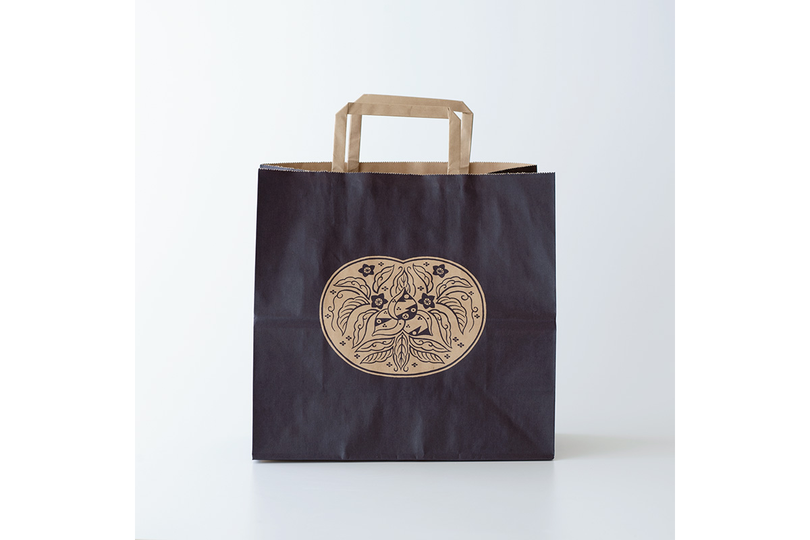
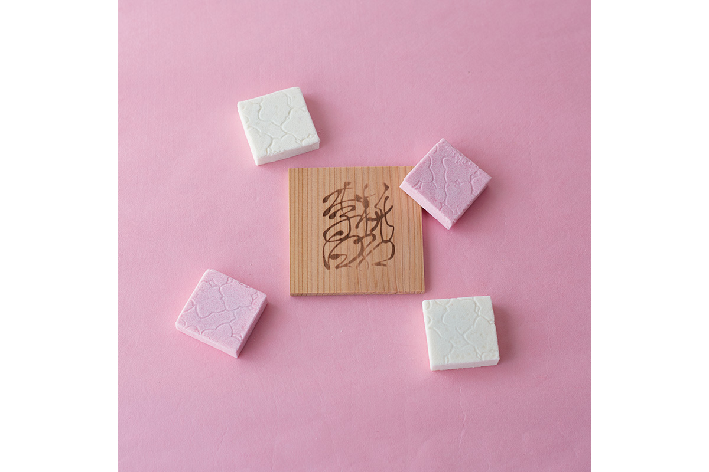
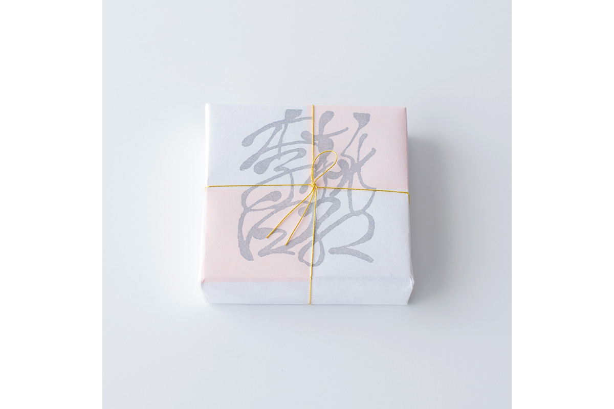
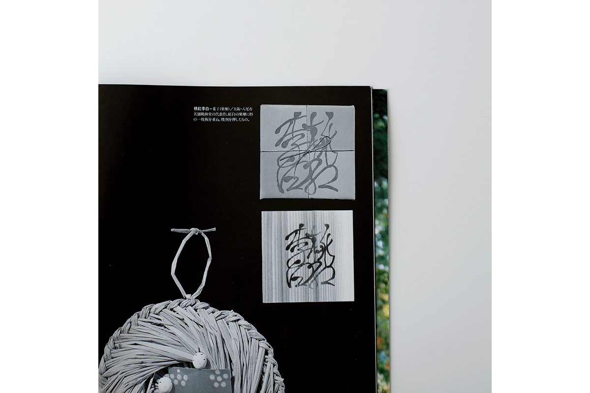
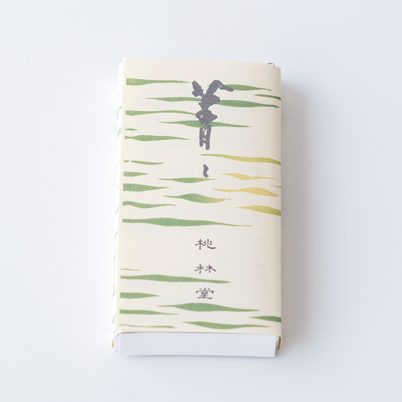
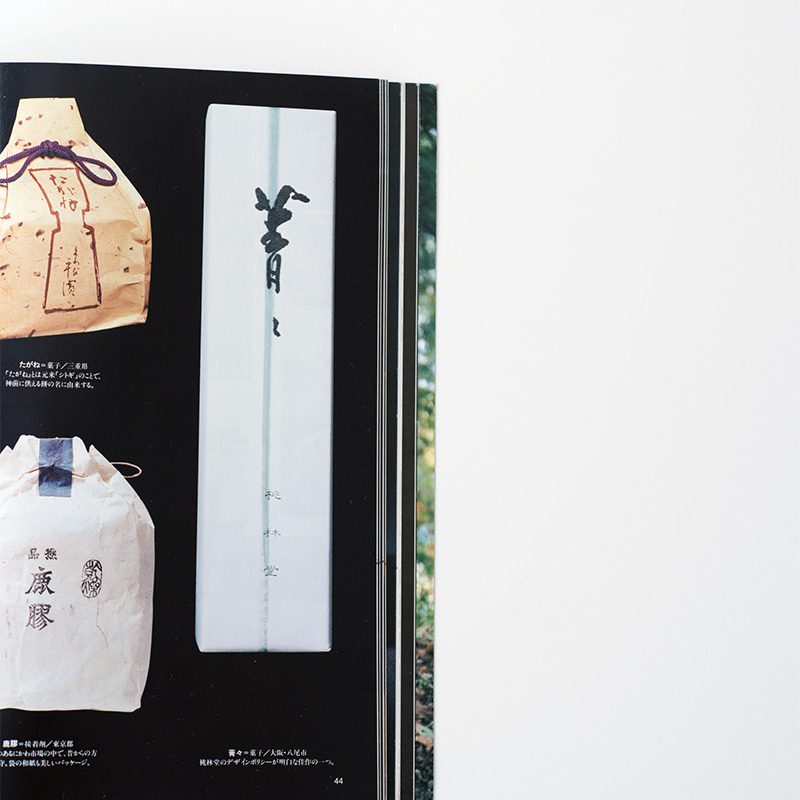

Префектура Осака · Яо · сладости
Кондитерская «Ториндо» в Яо: овощи в сахаре, ракуган в клетку и зелёные плитки «Сэйсэй»

Кондитерская «Ториндо» из Яо, города к востоку от Осаки, делает сладости, которые ценил основатель движения мингэй. Две из них к тому же попали в знаменитую книгу о том, как в Японии заворачивают вещи.
Готика
Овощи, ставшие сладостью
«Ториндо» это старая кондитерская Осаки. Её самая известная сладость называется «Готика»: овощи и фрукты, обсыпанные сахаром. Лопух, корень лотоса, морковь, цитрус хассаку, инжир, груша, кумкват, имбирь и стебли белокопытника превращаются в тонкие засахаренные кусочки. «Готику» знают прежде всего как сладость, которую любил Мунэёси Янаги.
О связи мингэй и домашней кухни часто говорит известный японский кулинар. В 2018 году телеканал NHK показал фильм о его путешествии по местам, где домашняя еда встречается с народным ремеслом, а в одном из интервью он сказал прямо: «Домашняя кухня это и есть мингэй». 20 марта 2020 года он написал в соцсети, что ему подарили сладость, которую любил Мунэёси Янаги: «Готику» от осакской «Ториндо». И добавил: «Теперь понятно почему».


Эта запись разбудила давнее воспоминание у одной японской исследовательницы сладостей. Её родители состояли в Японской ассоциации мингэй и почитали Янаги. Когда она училась в средней школе, они где-то узнали о «Готике», и вся семья её попробовала. Девочку тогда поразило, что овощи могут стать сладостью, и поразил их тонкий вкус. Спустя десятилетия «Ториндо» делает «Готику» так же бережно, как тогда.
Токо рихаку
Ракуган в красно-белую клетку

«Токо рихаку» это прессованная сладость: внутри ракугана, сухого сахарного печенья из рисовой муки, спрятана нежная бобовая паста косиан. Если развернуть упаковку, внутри окажется кедровая дощечка с выжженным названием, а на ней квадратики ракугана, разложенные красно-белой клеткой. На поверхности каждого оттиснут тонкий цветочный узор.
Розовый цвет означает цветы персика, белый цветы сливы. Название взято из строки старинного китайского трактата о стихосложении «Ши гэ»: «Персик красен, слива бела, роза лилова. Спросишь весенний ветер почему, а он не знает». Вкус у сладости глубокий и спокойный, к ней хорошо подходят маття или чай гёкуро.


Книга
Упаковка как народное ремесло
«Токо рихаку» и ещё одна сладость «Ториндо» вошли в книгу арт-директора Хидэюки Оки «Цуцуму: традиционная японская упаковка». Первое издание вышло в 1965 году. По духу это тоже мингэй, только целиком посвящённый тому, как вещи заворачивают: в бамбук, дерево, солому, бумагу. Большая часть упаковок в книге предназначена для еды. С тех пор многие из этих вещей по разным причинам перестали делать, а сладости «Ториндо» в 2022 году всё ещё делали.
Сэйсэй
Вкус, которого почти не слышно
Вторая сладость из книги называется «Сэйсэй». Это прессованное лакомство, для которого берут только три продукта: муку из обжаренного клейкого риса, тонкий сахар васамбон и чуть-чуть маття. Светло-зелёное тесто расчерчено поперечными полосками.
«Истинный вкус пресен. В сладости из самых лучших продуктов нет лишних привкусов»
хозяин «Ториндо»
По его словам, японская сладость вообще строится на сочетании продуктов почти без собственного вкуса. Поэтому «Сэйсэй» стоит пробовать медленно, всеми чувствами сразу, чтобы уловить её едва заметный аромат.


«Ториндо», магазин в Яо
- Адрес
- префектура Осака, Яо, Ямамото-тё Минами, 8-19-1
- Телефон
- +81 72-923-0003
- Часы работы
- 9:00–17:30
- Выходные
- без выходных, кроме 1 января
- Сайт
- tourindou100.jp
Фото: Вакана Баба.